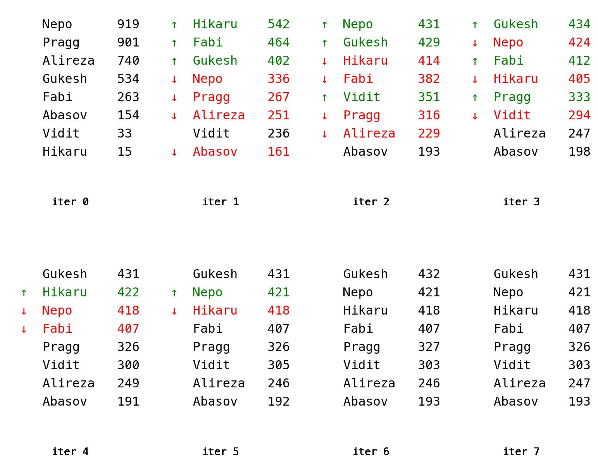

| white_player | black_player | white_points | black_points | |
|---|---|---|---|---|
| 53 | Abasov | Vidit | 0.5 | 0.5 |
| 50 | Vidit | Alireza | 1.0 | 0.0 |
| 52 | Vidit | Abasov | 0.5 | 0.5 |
| 7 | Pragg | Gukesh | 0.0 | 1.0 |
| 14 | Hikaru | Nepo | 0.5 | 0.5 |
Chessrank: Who Should Win a Chess Tournament?
Last updated: Jan 3, 2025.
High-level chess tournaments are typically organized in a round-robin format. Every player plays everyone else twice, once with the white pieces and once with black. A win gets 1 point, a loss is counted as 0 points and a draw gets ½ point. The player with the highest score at the end wins the tournament.
This raises a question: are all wins equal? Chess players have an Elo rating based on past performance and the probability of a lower rated player beating a higher rated player drops quite sharply as the rating difference increases. A player rated 100 points higher on the FIDE scale for example has a ~60% chance of winning a game (François Labelle 2016). Given this, should a win against a “weak” player really be counted as the same as winning against a player of comparable strength? Is there a better way of scoring the tournament? Would results of tournaments be affected if we used such a better way?
These questions were debated in the 19th century and an answer was provided by the mathematician Edmund Landau, writing his first ever publication at the age of 18. This work is described in (Sinn and Ziegler 2022) and this post is largely based on that paper.
Quality
We’ll come up with a way to rank the performance of players in a tournament by making the following assumptions:
- We postulate the existence of a “quality score” for each player.
- The quality of a player is the sum of their game results (\(0\), \(½\), or \(1\)) but with each result weighted by the quality of the opponent.
Let’s number the players \(1..N\) and define a tournament matrix \({\mathbf T}\) where an entry \(t_{ij}\) is player \(i\)’s total result against player \(j\). So for example, if player 1 won both games against player 2, \(t_{12} = (1 + 1) = 2\).
The quality of all the players can now be written as a set of simultaneous equations, illustrated here for a 4-player tournament:
\[ \begin{aligned} t_{11}\,q_1 + t_{12}\,q_2 + t_{13}\,q_3 + t_{14}\,q_4 &= \lambda q_1 \\ t_{21}\,q_1 + t_{22}\,q_2 + t_{23}\,q_3 + t_{24}\,q_4 &= \lambda q_2 \\ t_{31}\,q_1 + t_{32}\,q_2 + t_{33}\,q_3 + t_{34}\,q_4 &= \lambda q_3 \\ t_{41}\,q_1 + t_{42}\,q_2 + t_{43}\,q_4 + t_{44}\,q_4 &= \lambda q_4 \\ \end{aligned} \]
where all \(t_{ii} = 0\).
If we think of the quality scores of all the players as the vector \({\mathbf q}\), the set of equations can be written as:
\[ \mathbf{T} \, \mathbf{q} = \lambda \, \mathbf{q} \] This is nothing but the definition of \({\mathbf q}\) as an eigenvector!
What is the intuitive understanding of \({\textbf q}\) as an eigenvector? I think of it like this:
For a tournament with \(N\) players, there is an \(N\)-dimensional space where each point represents one possible ordering of the players. To keep things simple we can focus only on vectors of magnitude \(1\), thus each possible ordering is a point on a hypersphere.
The tournament matrix is a transformation on this space. It maps any hypothetical ranking \({\mathbf q}_\text{before}\) to a new ranking \({\mathbf q}_\text{after}\). The act of holding the tournament is our attempt to discover the “true” value of \({\mathbf q}\).
Now imagine we knew the “true” value of \({\mathbf q}\) before the tournament. We would then expect the tournament matrix to leave the vector unchanged. An eigenvector of \({\mathbf T}\) is in some sense the “axis of rotation” of the hypersphere we just mentioned, in that its direction is left unchanged when the matrix acts upon it. Thus this eigenvector is the true quality vector we seek.
(The above explanation is necessarily a bit of a hand-wave because intuition demands sacrificing rigor).
Candidates 2024
Some code below is hidden for clarity but you can find everything on github.
Let’s apply the above ranking method to a real tournament, the 2024 Candidates, won by Gukesh D who would go on to become the youngest world champion in Dec 2024.
First we load the results into a DataFrame that looks like this (a few sample rows shown):
We then turn it into the matrix T:
[[0.0 0.5 0.5 0.0 0.5 1.0 0.0 1.0]
[1.5 0.0 0.5 1.0 0.0 0.5 1.0 0.5]
[1.5 1.5 0.0 1.0 0.5 1.0 1.5 1.5]
[2.0 1.0 1.0 0.0 1.0 1.0 1.5 1.5]
[1.5 2.0 1.5 1.0 0.0 1.0 1.5 0.0]
[1.0 1.5 1.0 1.0 1.0 0.0 1.0 2.0]
[2.0 1.0 0.5 0.5 0.5 1.0 0.0 1.5]
[1.0 1.5 0.5 0.5 2.0 0.0 0.5 0.0]]When we follow the conventional method of just adding the points, we get the following tournament ranking:
| Score | |
|---|---|
| Gukesh | 9.0 |
| Fabi | 8.5 |
| Hikaru | 8.5 |
| Nepo | 8.5 |
| Pragg | 7.0 |
| Vidit | 6.0 |
| Alireza | 5.0 |
| Abasov | 3.5 |
The power method
We could find the eigenvectors of this matrix simply by calling np.linalg.eig(T) but there is an elegant method that also scales better to really large matrices.
The power iteration method can be described in one sentence as:
If you start with a random vector and repeatedly apply a matrix, it converges to the eigenvector with the largest eigenvalue.
The only further detail needed is that the vector should be normalized after each iteration to prevent it from growing without bounds. Let’s write the function and also have it return all the intermediate values because it’ll be useful later to visualize:
def power_iters(T: np.array, n: int) -> list[np.array]:
"Return the results of the applying the power method n times"
q = np.random.random(T.shape[0])
results = [q]
for i in range(n):
Tq = T @ q
q = Tq / np.linalg.norm(Tq)
results.append(q)
return resultsWhy does this work?
Imagine that the eigenvectors of \({\mathbf T}\) form the basis for our vector space. Ignore for a moment whether this is possible in general. When expressed in this basis, \({\mathbf T}\) is a diagonal matrix, with the diagonal values being the eigenvalues. Let’s call the largest of these the dominant eigenvalue. Now if we take a random vector and repeatedly apply the matrix to it (while normalizing after each step), the dominant eigenvalue will make one of the components of the vector grow relative to the others. Eventually the vector will come to point almost entirely in the direction of that component. Given that we’re working in the eigenbasis, this vector is nothing but an eigenvector.
Another way to think about it is that the power method continually “pulls” a vector towards the eigenvector with the dominant eigenvalue. We can see this in action with our dataset. We’ll start with a random vector that represents an arbitrary ranking of the players. After each iteration, we’ll mark the players that rose or fell in the rankings. The scores mentioned after each player name are the 3 digits after the decimal place (so \(0.919… = 919\)).

We see that the starting vector converges quite quickly to a stable ordering. We also see that it’s the same order as the one obtained by adding up the points (except for the second place group, Nepo, Hikaru and Fabi, but it would be a mistake to think that the slight differences signify anything). I suspect that in most cases the method described here produces the same ranking as just adding up points, which explains why the simpler system is still used in tournaments.
Conclusion
The really cool thing I learned from reading the paper mentioned at the top (Sinn and Ziegler 2022) is that this method is the same as PageRank!
Instead of a tournament matrix we have the matrix of links between web pages, \({\mathbf W}\) and each entry \({\mathbf W}_{ij}\) is the number of links from page \(i\) to page \(j\). See the blog post (Jeremy Kun 2011) for a detailed description of PageRank.
We can even think of it as a game. If gorur.dev has hundreds of links to arxiv.org while there are no links in the other direction, arxiv.org “wins” over gorur.dev. Computing the PageRank is like ranking the web pages in this “tournament”!
References
François Labelle. 2016. “Elo Win Probability Calculator.” https://wismuth.com/elo/calculator.html.
Jeremy Kun. 2011. “Google’s PageRank—A First Attempt.” Math \(\cap\) Programming. https://www.jeremykun.com/2011/06/18/googles-pagerank-a-first-attempt/.
Sinn, Rainer, and Günter M. Ziegler. 2022. “Landau on Chess Tournaments and Google’s PageRank.” arXiv. https://doi.org/10.48550/ARXIV.2210.17300.